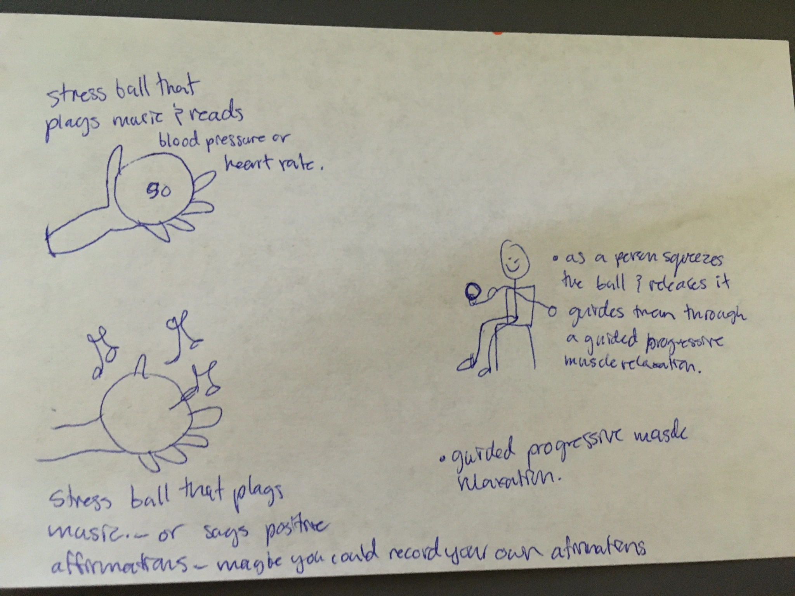
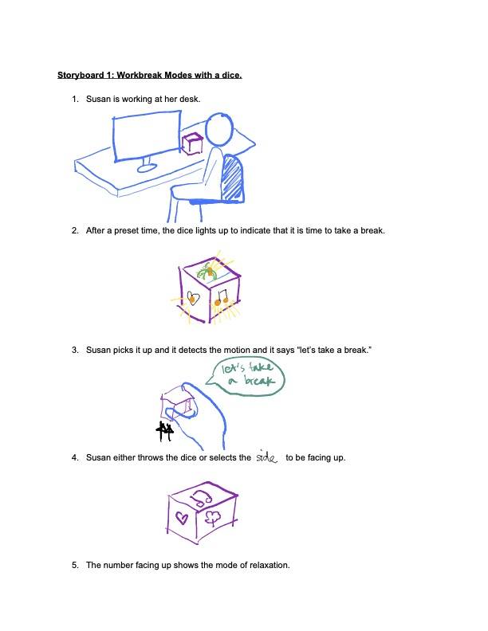
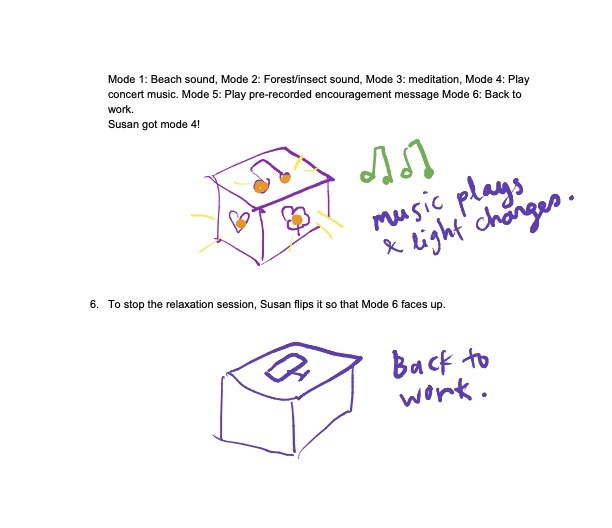
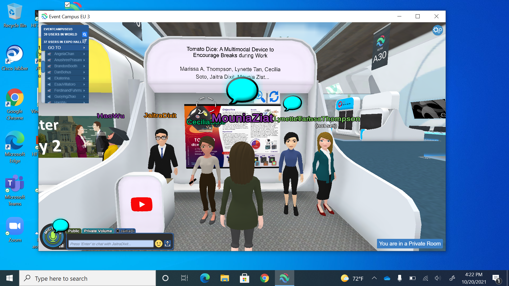

Tomato Dice
Reading time: 3 minutes
The COVID pandemic has resulted in many people working from home, blurring lines between work and personal time. In response, the Tomato Dice, a multimodal device, attempts to provide a fun way for people to take more effective breaks amid work through timeboxing. After the dice is rolled, each side plays visual and audio feedback helping users to either work for a set amount of time or take a break away from their work screens. In this paper, we discussed the design process and the different modes of the dice. We also conducted a heuristic evaluation followed by a usability study which revealed that participants were mostly fascinated with the dice and were more likely to use the Tomato Dice to relax than to take breaks.
The Tomato Dice was a project developed during the course of approximately one year. The project went from ideation, prototype creation, and the team later published their findings as a research paper.

Figure 1 Functional Analysis of the Prototype
Figure 2 First storyboard for how the interactions would look like
Figures 2 & 3 Second storyboard
Tools Used
- Literature review about time boxing techniques and relaxation in the workplace.
- Ideation tools such as Brainstorming, Functional Analysis, Storyboards and a Morphological Chart.
- Arduino UNO with a Grove Seeed Board and multiple components.
- Heuristic review against Nielsen’s and Molich’s rules of thumb for good UX and ID.
- Usability Study to test the initial and second prototype.
- A mix of quantitative and qualitative analysis of the data form the Usability Study, tools used included a Sentiment and Thematic Analysis, an exit standardized test, as well as User Interviews.

Learnings
The results of the study revealed issues such as confusion over some instructional audio and visual cues. Our results showed that participants mostly reported being fascinated by the dice. They also conveyed a higher likelihood to use it for relaxation than taking breaks. While the visual and audio playbacks of the dice may be relaxing, it is not as content-heavy as other online media.
![A concept map for a relaxation device highlights key features and experiences. Tangible interaction includes attributes such as being malleable, intuitive, and having a smooth texture, setting it apart from screens. The audio component offers volume control and incorporates voice/music, with options for headphone or mute use depending on the scenario. Visual elements are designed to be relaxing and fun to watch, with speed controls and examples of effective and ineffective visuals. Available modes focus on customization, meditation, exercises, and dance, with considerations for additional options and space. Dice usage encourages taking breaks from work, is beneficial after stressful meetings, and serves as a preferable alternative to social media when bored or frustrated. Each section is color-coded and interconnects related ideas and applications.](thematic-analysis.png)
Figure 4 Thematic Analysis results
Based on the usability study, other improvements include allowing the user to customize the cube, adding volume control, adding a countdown on the timer mode, and adding Bluetooth. All participants reported that they would use the cube less if they were working in an office because they would not want to disturb others. The cube could have additional modes that would be optimized to help users feel comfortable using the Tomato Dice in a shared workspace. For example, there could be a silent mode for users whose work is no longer remote. Some participants also suggested adding some elements of humor, adding more sensations to the cube, and making it more ‘hands-on’, such as being able to manipulate it freely while it is in Work Mode.
Considering that the dice will be thrown around, we would also need to explore ways that the material and design of the cube would reduce any impact on its electrical components.
Outcomes
This project was presented virtually during the ICMI Conference on Octobre 20th, 2021. The paper was included in the proceedings of said conference and published on ACM’s (Association for Computing Machinery) ICMI-MLMI (Multimodal Interfaces and Machine Learning for Multimodal Interaction) 2021 Conference. The paper can be accessed here and here (full text).
Figure 5 A final screenshot of the virtual team presenting the Tomato Dice during the conference